단순한 네트워크에서 다중 소스 통합으로
구조화된 생명의학 데이터를 통합하고, 그래프 분석과 LLM 해석으로 의사결정 후보를 만드는 법
0. 핵심 요약
Chapter 4는 3장의 단일 온톨로지 예제를 넘어, 이미 구조가 있는 생명의학 데이터셋을 그래프로 통합하고 분석하는 방법을 다룬다. 핵심 무대는 세 가지다. PPI와 질병 연관 네트워크는 통합과 기본 그래프 분석을 보여 주고, Hetionet은 이질적 스키마 위에서 메타경로와 DWPC를 계산하는 법을 보여 주며, CKG는 임상 맥락에서 KG 결과를 LLM 해석으로 연결하는 방식을 보여 준다.
이 장에서 LLM은 데이터 구축의 주인공이 아니다. CSV, 백업 DB, 온톨로지처럼 이미 구조화된 출처가 있을 때는 전통적인 적재·정렬·제약·질의가 더 중요한 기반이다. LLM은 그 기반에서 나온 수치와 경로를 사람이 읽을 수 있는 설명과 후속 질문으로 바꾸는 보조 역할에 머문다.
- 문제 — 생명의학 지식은 질병, 유전자, 단백질, 약물, 환자 기록에 흩어져 있으며 식별자와 스키마가 맞지 않으면 함께 질의할 수 없다.
- 메커니즘 — 제약조건과 `MERGE`로 안정적으로 적재하고, WCC/Louvain/부분 그래프 지표/DWPC로 구조와 후보 경로를 점검한다.
- 판단 — 높은 점수와 LLM 설명은 가설 생성의 출발점이지 임상 결론이 아니며, 도메인 검증·프라이버시·환자 안전 게이트가 필요하다.
| 흐름 | 핵심 질문 | 사용한 KG | 발표에서 가져갈 판단 |
|---|---|---|---|
| 통합 | 여러 생명의학 출처를 같은 그래프 언어로 묶을 수 있는가? | PPI, DisGeNET, Disease Ontology, NIH gene_info | 노드 키, 식별자 조정, 분류 보강이 분석보다 먼저 온다. |
| 구조 분석 | 그래프가 한 덩어리인지, 의미 있는 군집이 있는지 어떻게 볼까? | PPI projection | WCC와 Louvain은 전체 구조를 보지만 질병 경로의 의미를 직접 대체하지 않는다. |
| 도메인 분석 | 특정 질병의 단백질 집합은 어떤 내부·외부 연결을 갖는가? | 질병 경로 부분 그래프 | largest CC, density, conductance는 경로 품질과 분산 정도를 수치화한다. |
| 경로 순위화 | 이질적 KG에서 흔한 허브를 누르고 특이한 경로를 찾을 수 있는가? | Hetionet | DWPC는 단순 경로 수보다 인기 노드 편향을 줄인다. |
| 해석 | 수치와 경로를 사람이 실행할 수 있는 질문으로 바꿀 수 있는가? | Hetionet, CKG + LLM | LLM은 해석 보조자이며 최종 판단과 안전성 검토는 사람의 책임이다. |
4.1 생명의학 지식 그래프와 그 활용 — 어떤 문제를 풀 수 있나
- 생명의학 KG는 약물 재활용, 진단, 단백질 기능 규명, 안전한 약물 추천처럼 서로 다른 목표를 같은 그래프 표현으로 다룬다.
- 응용마다 CRISP-DM 단계와 데이터 소스가 다르므로, 목표가 바뀌면 필요한 노드·관계·품질 기준도 바뀐다.
- 그래프의 장점은 숨은 연결을 찾는 데 있지만, 그 연결이 실제 의학적 결론이 되려면 추가 근거와 전문가 검토가 필요하다.
출발점은 “그래프를 만들면 무엇을 할 수 있는가”이다. 질병과 단백질 사이의 알려진 관계에서 새 후보를 찾거나, 기존 약물의 다른 용도를 탐색하거나, 환자에게 더 안전한 약물 선택을 돕는 식의 과제는 모두 여러 종류의 사실을 관계로 연결해야 한다.
이 장의 중요한 관찰은 생명의학 응용이 서로 다른 비즈니스 목표를 갖지만, 상당수 데이터 소스를 공유한다는 점이다. 같은 질병·유전자·단백질 노드라도 한 응용에서는 발견 후보가 되고, 다른 응용에서는 안전성 검토의 근거가 된다.
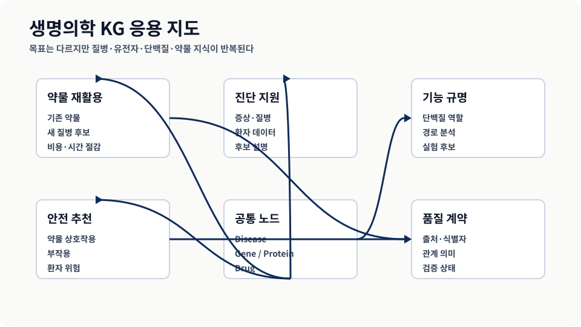
비즈니스 목표가 달라도 질병, 유전자, 단백질, 약물 같은 공통 엔티티를 공유한다는 점을 재구성했다. 출처: 원자료 그림 4.1.KG의 성공 여부는 “큰 그래프를 만들었는가”보다 “목표 질문에 필요한 관계와 품질 정보가 들어 있는가”로 판단해야 한다.
4.2 지식 그래프의 다중 오믹스 응용 — 유전체에서 단백질까지
- 다중 오믹스는 genome, transcriptome, proteome 같은 서로 다른 생물학적 층위를 함께 분석한다.
- 층위가 다르면 파일 형식과 식별자도 달라지므로, 통합은 단순한 append가 아니라 식별자 reconciliation과 스키마 alignment 문제다.
- LLM이 아니라 구조화된 통합 절차가 주역이며, LLM은 뒤쪽 해석 단계에서 더 유용하다.
유전체는 유전 정보 전체, 전사체는 발현된 RNA 집합, 단백질체는 세포가 실제 기능 단위로 사용하는 단백질 집합이다. 이 셋은 생물학적으로 DNA → RNA → protein 흐름으로 연결되지만, 데이터셋에서는 서로 다른 식별자와 측정 단위로 분리되어 나타난다.
유전체, 전사체, 단백질체 — 세 용어 정리
이 세 용어는 “분자생물학의 전체 층위”를 가리키는 말이다. 유전체(genome)는 한 생물이 가진 DNA 정보의 총합이고, 전사체(transcriptome)는 특정 조건에서 RNA로 복사되어 나타난 유전자 발현의 총합이며, 단백질체(proteome)는 그 발현이 실제 기능 단위인 단백질로 나타난 집합이다. 데이터 통합에서는 이 생물학적 흐름을 그대로 믿고 파일을 합치면 안 된다. 같은 유전자가 서로 다른 데이터베이스에서 다른 ID, 다른 측정 단위, 다른 조직·시점 조건으로 나타날 수 있기 때문이다.
| 층위 | 무엇을 본다 | KG에서 주의할 점 |
|---|---|---|
| Genome | DNA와 유전자 변이 | 질병·표현형과 연결할 때 유전자 ID와 변이 ID를 구분한다. |
| Transcriptome | 조건별 RNA 발현 | 조직, 시간, 실험 조건이 빠지면 같은 유전자 발현을 비교할 수 없다. |
| Proteome | 기능 단위 단백질과 상호작용 | 단백질 심볼, 유전자 ID, PPI 근거가 섞이지 않게 provenance를 남긴다. |
Yang 등 사례의 핵심은 여러 데이터베이스의 질병 이름을 하나의 통합 코드로 맞추는 것이다. UMLS 같은 공통 식별자는 그래프에서 같은 질병을 같은 노드로 보게 하는 접착제 역할을 한다. 다만 접착제가 모든 의미 차이를 자동으로 해결하지는 않는다. 어떤 출처가 어떤 질병 정의와 어떤 증상 범위를 썼는지 확인해야 통합 노드가 과도하게 넓어지지 않는다.
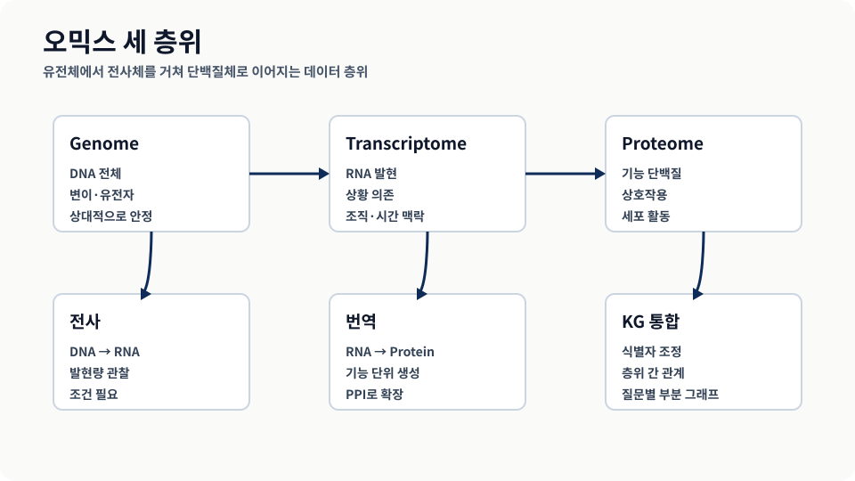
유전체·전사체·단백질체가 분리된 파일이 아니라 생물학적 생성 흐름으로 연결된다는 점을 보여 준다. 출처: 원자료 그림 4.2.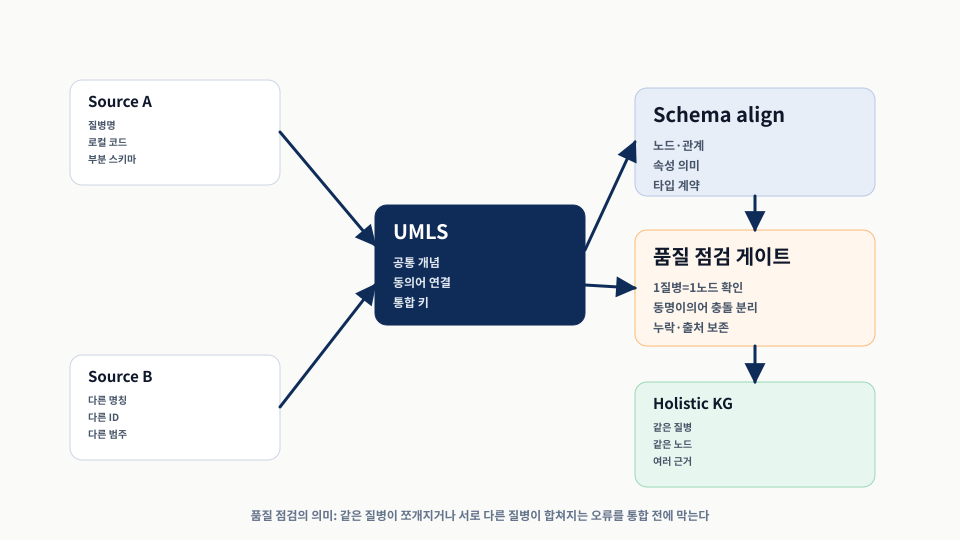
핵심은 새 모델이 아니라 식별자 조정과 스키마 정렬이다. 원자료 그림 4.3의 다중 소스 통합 관계를 공개용 도식으로 다시 그렸다.4.2.1 PPI와 단백질–질병 네트워크로 지식 그래프 만들기
- 질병 경로는 특정 질병과 연관된 단백질 집합이 PPI 네트워크 안에서 이루는 부분 그래프다.
- 구축 파이프라인은 노드 키 제약조건, PPI 엣지 적재, 질병-단백질 연관 적재, 질병 분류와 유전자 이름 보강으로 이어진다.
- 여기서 얻는 결과는 후보 발견을 위한 그래프이며, 새 단백질을 임상적 사실로 확정하지 않는다.
PPI 네트워크는 단백질끼리의 상호작용만 담는 단일 분할 그래프이고, 질병-단백질 연관은 질병과 단백질이라는 두 노드 유형 사이를 잇는 이분 그래프다. 이 둘을 함께 두면 “이 질병과 관련된 단백질들이 서로 어떻게 연결되는가”라는 질문을 할 수 있다.
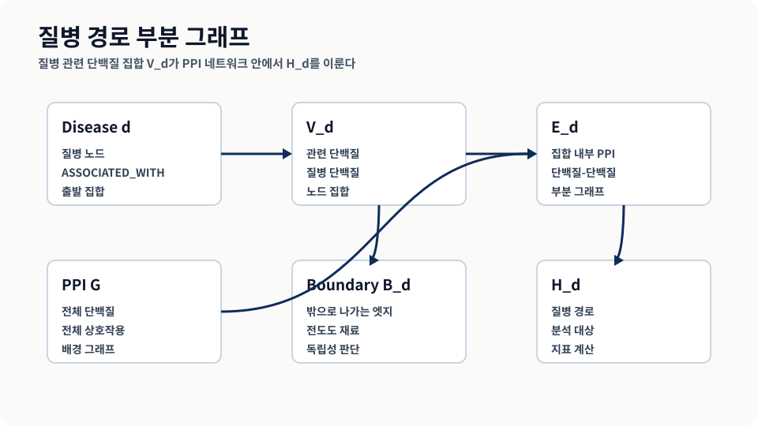
질병 경로를 질병-단백질 엣지와 PPI 부분 그래프의 결합으로 설명한다. 출처: 원자료 그림 4.4.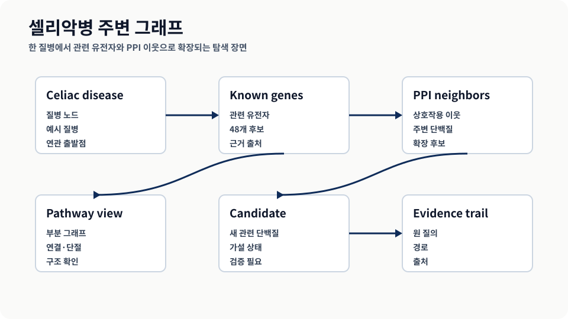
원자료 그림 4.5의 예시는 한 질병이 단백질 집합을 통해 주변 PPI 네트워크로 확장되는 탐색 장면이다.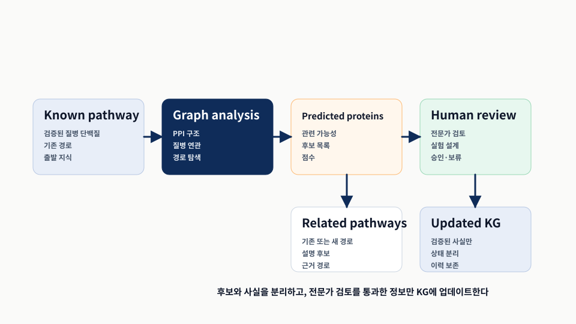
발견 과정은 예측 후보를 곧바로 사실로 확정하지 않고, 후보 단백질·관련 경로·검증 필요 상태로 나누어 읽어야 한다. 출처: 원자료 그림 4.6.Listing 4.1 제약조건 만들기
단백질과 질병 노드의 식별자를 노드 키로 묶어 중복 적재를 막는다. 통합 KG의 첫 검증 게이트다.
CREATE CONSTRAINT protein_key IF NOT EXISTS
FOR (n:Protein) REQUIRE (n.id) IS NODE KEY;
CREATE CONSTRAINT disease_key IF NOT EXISTS
FOR (n:Disease) REQUIRE (n.id) IS NODE KEY;Listing 4.2 PPI 네트워크 가져오기
CSV의 두 단백질 ID를 노드로 만들고 `INTERACTS_WITH` 관계를 추가한다. 원자료 수치는 단백질 21,559개와 상호작용 342,354개다.
:auto LOAD CSV FROM 'file:///PPI/bio-pathways-network.csv' AS line
CALL {
WITH line
MERGE (f:Protein {id: trim(line[0])})
MERGE (s:Protein {id: trim(line[1])})
MERGE (f)-[:INTERACTS_WITH]->(s)
} IN TRANSACTIONS OF 100 ROWSListing 4.3 질병 경로 데이터 가져오기
DisGeNET 기반 질병-단백질 연관성을 넣는다. 쉼표로 묶인 유전자 ID를 `UNWIND`로 펼치는 부분이 핵심이다.
:auto LOAD CSV WITH HEADERS FROM 'file:///PPI/bio-pathways-associations.csv' AS line
CALL {
WITH line
MERGE (d:Disease {id: trim(line['Disease ID'])})
UNWIND split(trim(line['Associated Gene IDs']), ',') AS protein
MERGE (p:Protein {id: trim(protein)})
MERGE (d)-[:ASSOCIATED_WITH]->(p)
} IN TRANSACTIONS OF 100 ROWSListing 4.4 질병 분류 가져오기
이미 생성한 질병 노드에 Disease Ontology 기반 분류를 보강한다. 모든 질병이 분류를 갖지 않으므로 누락 목록도 확인해야 한다.
:auto LOAD CSV WITH HEADERS FROM 'file:///PPI/bio-pathways-diseaseclasses.csv' AS line
CALL {
WITH line
MATCH (d:Disease {id: line['Disease ID']})
SET d.class = line['Disease Class']
} IN TRANSACTIONS OF 100 ROWSListing 4.5 유전자 정보 가져오기
NIH gene_info를 붙여 숫자 ID 중심 그래프를 사람이 읽을 수 있는 심볼과 설명으로 바꾼다.
:auto LOAD CSV WITH HEADERS FROM 'file:///PPI/gene_info' AS line
FIELDTERMINATOR '\t'
CALL {
WITH line
MATCH (p:Protein {id: trim(line['GeneID'])})
SET p.name = trim(line['Symbol']),
p.description = trim(line['description'])
} IN TRANSACTIONS OF 100 ROWS4.2.2 만들어진 지식 그래프의 고수준 분석 — 전체 구조 살펴보기
- PPI 데이터베이스는 백업에서 바로 가져올 수 있고, GDS 분석 전에는 `PPIProtein` 레이블과 메모리 projection을 만든다.
- WCC는 거의 모든 단백질이 거대한 연결 컴포넌트에 속한다는 사실을 보여 준다.
- Louvain은 연결 여부보다 커뮤니티 구조를 보며, 평균 약 450개 단백질 규모의 커뮤니티와 모듈성 값을 제공한다.
고수준 분석은 구축한 그래프가 분석 가능한 형태인지 확인하는 첫 품질 검사다. WCC는 끊긴 부분 그래프의 분포를 보고, Louvain은 내부 연결이 비교적 강한 커뮤니티를 찾는다. 둘 다 유용하지만, 모든 노드와 관계를 같은 의미로 취급하므로 도메인 질문을 직접 답하지는 않는다.
Listing 4.6 Neo4j 백업으로 PPI 데이터베이스 만들기
직접 적재하지 않은 학습자는 백업으로 같은 분석 출발점을 만들 수 있다. `seedUri`는 Neo4j 5.x의 원격 시드 기능에 의존한다.
CREATE DATABASE ppi OPTIONS {
existingData: 'use',
seedUri: 'https://mng.bz/5v7O'
}Listing 4.7 PPI 네트워크의 단백질 표시하기
상호작용을 가진 단백질만 분석 대상 레이블로 표시한다. 전체 Protein과 분석용 PPIProtein을 구분하는 장치다.
MATCH (p:Protein)-[:INTERACTS_WITH]-()
SET p:PPIProteinListing 4.8 메모리에 그래프 프로젝션 만들기
GDS 알고리즘은 데이터베이스 그래프를 바로 쓰지 않고 메모리 프로젝션을 대상으로 실행된다.
CALL gds.graph.project(
'ppi-graph',
'PPIProtein',
{ INTERACTS_WITH: { orientation: 'UNDIRECTED' } }
)Listing 4.9 PPI 네트워크에서 WCC 실행하기
WCC는 연결 여부만으로 끊긴 부분 그래프를 찾고, 결과 componentId를 노드 속성으로 쓴다.
CALL gds.wcc.write('ppi-graph', { writeProperty: 'componentId' })
YIELD nodePropertiesWritten, componentCount, componentDistribution| nodePropertiesWritten | componentCount | 핵심 분포 |
|---|---|---|
| 21559 | 27 | max=21521, p50=1, p90=3 |
WCC 결과는 PPI 네트워크가 하나의 거대한 덩어리와 몇 개의 작은 섬으로 구성되어 있음을 보여 준다. 이는 네트워크 연결성의 품질 확인에는 좋지만, 질병별 기능 경로가 내부적으로 밀집되어 있다는 의미는 아니다.
Listing 4.10 PPI 네트워크에서 Louvain 실행하기
Louvain은 내부 연결이 무작위 기대보다 얼마나 강한지 보는 모듈성 기반 커뮤니티 탐지다.
CALL gds.louvain.write(
'ppi-graph',
{ writeProperty: 'componentLouvainId' }
)
YIELD communityCount, modularity, modularities, communityDistribution| communityCount | modularity | 핵심 분포 |
|---|---|---|
| 48 | 0.5464241018027929 | max=3533, mean≈449.15, p75=311 |
Listing 4.11 상위 10개 커뮤니티 살펴보기
커뮤니티 크기만 보지 않고 연결 많은 대표 단백질을 같이 뽑아 도메인 의미를 확인한다.
MATCH (p:PPIProtein)
WITH p.componentLouvainId AS communityId, count(p) AS members
ORDER BY members DESC LIMIT 10
MATCH (p:PPIProtein)-[:INTERACTS_WITH]-(o)
WHERE p.componentLouvainId = communityId
RETURN communityId, members, collect(p.name)[..20] AS keyMembersWCC와 Louvain은 범용 구조 분석이다. 질병이라는 의미를 아는 분석은 다음 절의 부분 그래프 지표에서 시작된다.
4.2.3 PPI와 질병 지식 그래프의 도메인 특화 분석 — 질병 경로를 자로 재다
- 질병 경로 H_d는 질병 관련 단백질 V_d와 그들 사이의 PPI 엣지 E_d로 정의한다.
- largest pathway component, density, conductance는 각각 내부 연결 덩어리, 촘촘함, 외부와의 분리를 측정한다.
- 질병 경로는 Louvain 커뮤니티와 달리 내부가 흩어지고 외부와 많이 연결되는 경향을 보인다.
도메인 특화 분석은 “그래프 전체가 연결됐는가”에서 “특정 질병의 단백질 집합은 어떤 구조를 갖는가”로 질문을 바꾼다. 같은 PPI 네트워크라도 질병별 부분 그래프를 잘라 보면 내부 엣지와 외부 경계 엣지의 의미가 달라진다.
Listing 4.12 지식 그래프에서 질병 경로 추출하기
질병과 연관된 단백질 집합 안에서만 PPI 엣지를 남겨 질병 경로 부분 그래프를 만든다.
MATCH (d:Disease {id: $id})-[:ASSOCIATED_WITH]->(p)
WITH collect(p) AS proteins
UNWIND proteins AS m0
UNWIND proteins AS m1
OPTIONAL MATCH (m0)-[r:INTERACTS_WITH]->(m1)
RETURN DISTINCT m0, r, m1Listing 4.13 가장 큰 경로 컴포넌트의 크기 구하기
클래스는 Neo4j에서 질병 경로를 가져와 NetworkX 그래프로 바꾸고, 가장 큰 연결 컴포넌트 비율을 계산한다. 원문 구조의 핵심은 `load_hd` 질의, Cypher 결과 변환, `nx.connected_components` 계산이 한 흐름으로 이어지는 데 있다.
class MultiOmicAnalysis(GraphDBBase):
def __init__(self, argv, database):
super().__init__(command=__file__, argv=argv)
self.__database = database
def load_hd(self, disease):
query = """
MATCH (d:Disease {id: $id})-[:ASSOCIATED_WITH]->(p)
WITH collect(p) AS proteins
UNWIND proteins AS m0
UNWIND proteins AS m1
OPTIONAL MATCH (m0)-[r:INTERACTS_WITH]->(m1)
RETURN DISTINCT m0, r, m1
"""
return self.load_graph_and_get_nx_graph(query, {"id": disease})
def load_graph_and_get_nx_graph(self, query, param={}):
data = self.get_raw_data(query, param)
return graph_undirected_from_cypher(data)
def get_raw_data(self, query, param):
with self._driver.session(database=self.__database) as session:
return session.run(query, param).graph()
def compute_largest_components(self, networkx_graph):
return max(nx.connected_components(networkx_graph), key=len)
analysis = MultiOmicAnalysis(argv=sys.argv[1:], database="ppi")
networkx_graph = analysis.load_hd("celiac disease")
largest_cc = analysis.compute_largest_components(networkx_graph)
relative_size_of_largest_cc = len(largest_cc) / len(networkx_graph.nodes)Listing 4.14 밀도 계산하기
가능한 단백질-단백질 엣지 대비 실제 엣지 비율이다. 값은 0과 1 사이에 놓인다.
def compute_density(networkx_graph):
nodes_count = len(networkx_graph.nodes)
edges_count = len(networkx_graph.edges)
return 2.0 * edges_count / (nodes_count * (nodes_count - 1))Listing 4.15 전도도 계산하기
경로 안팎을 잇는 엣지 수를 내부 엣지와 함께 정규화한다. 낮을수록 독립적인 커뮤니티에 가깝다.
bd = analysis.compute_bd('celiac disease')
edges_count = len(networkx_graph.edges)
conductance = bd / (bd + 2 * edges_count)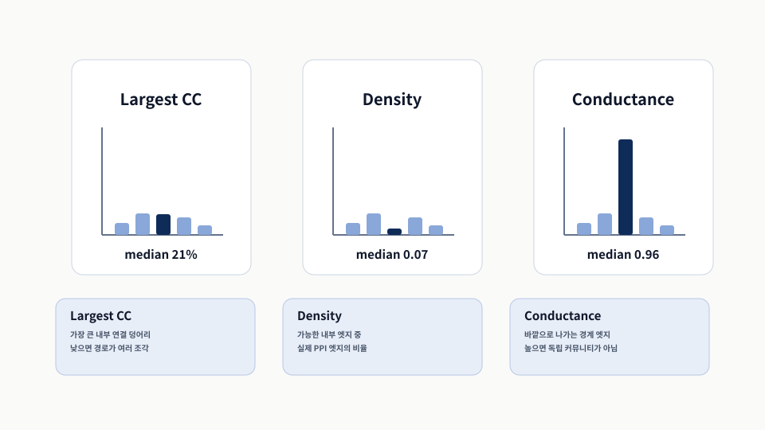
질병 경로는 내부 연결이 낮고 바깥 연결이 높아 일반 커뮤니티와 다르게 보인다. 원자료 그림 4.7의 세 분포를 핵심 판독값 중심으로 재구성했다.원자료의 질병 경로 분포는 중앙값 기준 가장 큰 컴포넌트가 전체 질병 단백질의 약 21%에 불과하고, 밀도 중앙값은 0.07, 전도도 중앙값은 0.96이라고 설명한다. 이는 질병 관련 단백질들이 한 덩어리로 뭉치기보다 PPI 네트워크 곳곳에 퍼져 있음을 시사한다.
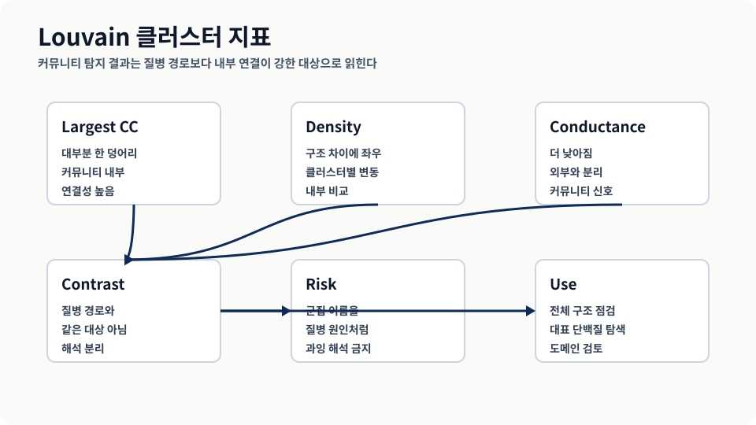
같은 지표라도 대상이 질병 경로인지 그래프 군집인지에 따라 의미가 달라진다. 출처: 원자료 그림 4.8.Louvain 클러스터에 같은 지표를 적용하면 다른 그림이 나온다. Louvain 클러스터는 대체로 내부가 더 잘 연결되고 외부와는 상대적으로 덜 연결된다. 이 대비 때문에 질병 경로를 일반 커뮤니티 탐지 결과와 같은 것으로 해석하면 안 된다.
4.3 지식 그래프의 제약 응용 — 약물 재활용의 지름길
- 약물 재활용은 이미 승인된 약물의 지식과 안전성 정보를 활용해 시간·비용·실패 위험을 낮추려는 접근이다.
- Hetionet은 29개 공개 자원을 통합해 11개 노드 유형과 24개 관계 유형을 가진 이질적 KG를 제공한다.
- 메타경로와 DWPC는 단순 연결 수가 아니라 경로의 유형과 허브 편향을 함께 고려한다.
신약 개발은 긴 기간과 높은 실패율을 갖기 때문에, 이미 알려진 화합물·질병·유전자·부작용·경로 지식을 재조합하는 약물 재활용 분석이 중요해진다. Hetionet은 여러 공개 자원의 지식을 미리 통합한 예시로, 이 장에서는 새 적재보다 분석과 평가에 초점을 둔다.
Listing 4.16 Het.io 데이터베이스 만들기
Hetionet은 29개 공개 자원을 통합한 Neo4j 그래프로, 이 장에서는 잘 설계된 이질적 KG 분석 대상으로 사용한다.
CREATE DATABASE hetionet OPTIONS {
existingData: 'use',
seedUri: 'https://mng.bz/648e'
}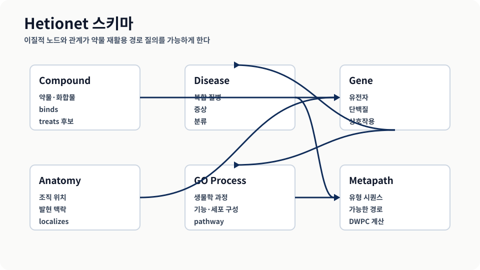
원자료 그림 4.9의 전체 스키마를 발표용으로 단순화해, 이질적 노드 유형이 경로 질의의 재료가 된다는 점을 강조했다.메타경로와 차수 가중 경로 수
메타경로는 실제 노드 하나하나의 경로가 아니라, “Gene — 관계 — Disease” 같은 유형 수준의 경로 패턴이다. 같은 패턴에 해당하는 실제 경로 수를 세면 PC가 되고, 경로를 지나는 노드의 차수로 감쇠를 적용해 합치면 DWPC가 된다.
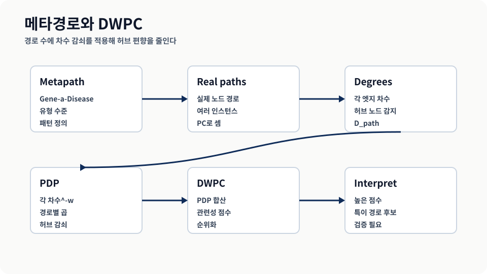
DWPC는 경로 수를 세되 차수가 높은 흔한 노드를 지나는 경로를 낮게 평가한다. 출처: 원자료 그림 4.10.DWPC가 중요한 이유는 유명하고 연결이 많은 허브 노드를 자동으로 낮게 평가하기 때문이다. 단순 PC만 쓰면 많은 질병·유전자와 연결된 일반 과정이나 유명 유전자가 거의 모든 질의에서 반복해서 상위에 올라온다. 이런 허브는 “어디에나 연결되어 있다”는 정보는 주지만, 특정 질병을 구분해 주는 신호로는 약하다. DWPC는 경로를 세되 차수가 높은 노드를 지난 경로의 기여도를 낮춰, 흔한 연결보다 질병 특이적인 경로 후보가 묻히지 않게 만든다. 따라서 DWPC 상위 결과는 확정 결론이 아니라, 단순 인기 노드 효과를 줄인 상태에서 검토할 우선순위 목록으로 읽어야 한다.
4.3.1 Hetionet 지식 그래프의 심층 분석 — 셀리악병을 파고들다
- 셀리악병 관련 유전자에서 GO biological process로 가는 메타경로를 질의하고 DWPC로 순위를 매긴다.
- 단순 PC는 넓고 흔한 과정을 과대평가할 수 있지만, DWPC는 더 특이적인 면역 관련 과정을 위로 올린다.
- GWAS, 단백질 상호작용, 조직 특이적 상향 조절 조건을 추가하면 다른 질병 특이 패턴이 드러난다.
첫 번째 질의는 질병-유전자-생물학적 과정 경로를 통해 셀리악병과 관련된 GO 과정을 찾는다. 결과에서 T cell costimulation과 lymphocyte costimulation은 높은 DWPC로 상단에 위치하고, 많은 유전자와 연결되는 넓은 과정은 단순 PC 대비 낮아진다.
Listing 4.17 셀리악병의 GO 과정 강화 분석
이 질의는 질병-유전자-GO 과정 경로를 찾고, 네 위치에서 차수를 추출한 뒤 `reduce`로 PDP를 계산해 DWPC를 만든다. 단순 `count(path)`가 아니라 허브 노드 감쇠를 포함한다.
MATCH path = (n0:Disease)-[:ASSOCIATES_DaG]-(n1)
-[:PARTICIPATES_GpBP]-(n2:BiologicalProcess)
WHERE n0.name = 'celiac disease'
WITH [
size([(n0)-[:ASSOCIATES_DaG]-() | n0]),
size([()-[:ASSOCIATES_DaG]-(n1) | n1]),
size([(n1)-[:PARTICIPATES_GpBP]-() | n1]),
size([()-[:PARTICIPATES_GpBP]-(n2) | n2])
] AS degrees, path, n2
WITH n2.identifier AS go_id,
n2.name AS go_name,
count(path) AS PC,
sum(reduce(pdp = 1.0, d IN degrees | pdp * d ^ -0.4)) AS DWPC,
size([(n2)-[:PARTICIPATES_GpBP]-() | n2]) AS n_genes
WHERE n_genes >= 5 AND PC >= 2
RETURN go_id, go_name, PC, DWPC, n_genes
ORDER BY DWPC DESC
LIMIT 10| GO ID | GO name | PC | DWPC | # genes |
|---|---|---|---|---|
| GO:0031295 | T cell costimulation | 10 | 0.03347 | 75 |
| GO:0031294 | lymphocyte costimulation | 10 | 0.03329 | 76 |
| GO:0002507 | tolerance induction | 3 | 0.03276 | 12 |
| GO:0050870 | positive regulation of T cell activation | 14 | 0.02925 | 201 |
| GO:0002684 | positive regulation of the immune system process | 21 | 0.02718 | 880 |
Listing 4.18 조직 특이적 인터랙토믹스
GWAS 출처, 단백질 상호작용, 질병 조직에서의 상향 조절 조건을 추가하면서도 DWPC 계산은 그대로 유지한다. 조건을 좁혀도 점수의 의미가 PC로 바뀌지 않는다.
MATCH path = (n0:Disease)-[e1:ASSOCIATES_DaG]-(n1)
-[:INTERACTS_GiG]-(n2)
-[:PARTICIPATES_GpBP]-(n3:BiologicalProcess)
WHERE n0.name = 'celiac disease'
AND 'GWAS Catalog' IN e1.sources
AND exists((n0)-[:LOCALIZES_DlA]-()-[:UPREGULATES_AuG]-(n2))
WITH [
size([(n0)-[:ASSOCIATES_DaG]-() | n0]),
size([()-[:ASSOCIATES_DaG]-(n1) | n1]),
size([(n1)-[:INTERACTS_GiG]-() | n1]),
size([()-[:INTERACTS_GiG]-(n2) | n2]),
size([(n2)-[:PARTICIPATES_GpBP]-() | n2]),
size([()-[:PARTICIPATES_GpBP]-(n3) | n3])
] AS degrees, path, n3 AS target
WITH target.identifier AS go_id,
target.name AS go_name,
count(path) AS PC,
sum(reduce(pdp = 1.0, d IN degrees | pdp * d ^ -0.4)) AS DWPC,
size([(target)-[:PARTICIPATES_GpBP]-() | target]) AS n_genes
WHERE 5 <= n_genes <= 100 AND PC >= 2
RETURN go_id, go_name, PC, DWPC, n_genes
ORDER BY DWPC DESC
LIMIT 10| GO ID | GO name | PC | DWPC | # genes |
|---|---|---|---|---|
| GO:0031295 | T cell costimulation | 10 | 0.00665 | 75 |
| GO:0031294 | lymphocyte costimulation | 10 | 0.00662 | 76 |
| GO:0010560 | positive regulation of glycoprotein biosynthetic process | 6 | 0.00342 | 17 |
| GO:0033689 | negative regulation of osteoblast proliferation | 4 | 0.00341 | 9 |
| GO:0070098 | chemokine-mediated signaling pathway | 9 | 0.00256 | 72 |
두 번째 질의는 GWAS 출처와 조직 특이성을 추가한다. 상위 두 면역 경로는 유지되지만, 당단백질 생합성과 관련된 과정이 올라오면서 더 구체적인 해석 질문을 만든다.
Listing 4.19 DWPC의 실제 경로 찾기
집계 점수 뒤에 놓인 실제 경로를 반환해 해석과 검증의 재료를 제공한다.
MATCH path = (d:Disease)-[a:ASSOCIATES_DaG]-(g1)
-[:INTERACTS_GiG]-(g2)
-[:PARTICIPATES_GpBP]-(bp:BiologicalProcess)
WHERE d.name = 'celiac disease'
AND bp.name = 'positive regulation of glycoprotein biosynthetic process'
AND 'GWAS Catalog' IN a.sources
RETURN path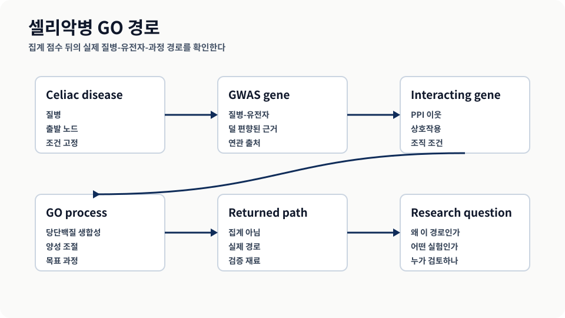
집계 점수 뒤의 실제 경로를 열어 보아야 생물학적 해석과 검증 질문을 만들 수 있다. 출처: 원자료 그림 4.11.4.3.2 LLM으로 경로 분석 결과 해석하기 — 숫자를 이야기로
- LLM은 DWPC 결과를 생물학적 맥락, 잠재 치료 함의, 후속 연구 질문으로 설명하도록 도울 수 있다.
- 프롬프트에는 결과 수치와 분석 조건을 함께 넣어야 하며, LLM이 임의로 근거를 보충하지 않도록 역할을 제한해야 한다.
- LLM 설명은 실행 가능한 가설 후보이지 임상 권고의 최종 승인물이 아니다.
DWPC 상위 결과는 연구자에게 “무엇을 더 조사할지”를 알려 주지만, 표만으로는 왜 의미 있는지 알기 어렵다. LLM은 T 세포 공동자극, 관용 유도, 당단백질 생합성 과정 같은 결과를 셀리악병의 면역학적 맥락으로 풀어 주는 보조 도구로 쓰인다.
Listing 4.20 LLM 분석 프롬프트 예시
프롬프트는 수치, 분석 조건, 요청 범위를 함께 제공한다. LLM에게 새로운 의학 사실을 만들게 하는 것이 아니라, KG 결과를 연구자가 검토할 해석 후보로 정리하게 한다.
You are a biomedical research assistant analyzing gene ontology pathway enrichment results for celiac disease. Please interpret the following results from a knowledge graph analysis and provide insights for clinical researchers:
QUERY RESULTS:
- T cell costimulation (DWPC: 0.03347, PC: 10, Genes: 75)
- lymphocyte costimulation (DWPC: 0.03329, PC: 10, Genes: 76)
- positive regulation of T cell activation (DWPC: 0.02925, PC: 14, Genes: 201)
- positive regulation of glycoprotein biosynthetic process (DWPC: 0.00342, PC: 6, Genes: 17)
CONTEXT: These pathways were identified through DWPC analysis of celiac disease-associated genes in a protein-protein interaction network. DWPC scores indicate pathway relevance while accounting for node degree bias.
ANALYSIS REQUEST:
1. Interpret the biological significance of these top-ranked pathways in celiac disease
2. Explain the relationship between these processes and celiac disease pathogenesis
3. Identify potential therapeutic implications
4. Highlight any unexpected findings that warrant further investigation
5. Suggest follow-up research questions based on these resultsLLM 출력은 “해석 후보”로 저장하고, 질의 결과·근거 경로·도메인 전문가 검토 상태와 분리해 관리해야 한다.
4.4 지식 그래프의 임상 응용 — 정밀 의료를 향하여
- 정밀 의료는 오믹스 데이터와 EHR 같은 환자 데이터를 함께 보아야 하지만, 프라이버시와 정보 결손이 큰 제약이다.
- 환자 여정 지도는 임상 사건을 시간과 맥락으로 읽게 하며, CKG는 33개 노드 레이블과 51개 관계 유형을 통합한다.
- 임상 질의 결과는 환자 층화, 안전성 모니터링, 추가 검사 기준 같은 의사결정 질문으로 이어진다.
임상 응용에서는 단순히 더 많은 데이터를 넣는 것보다, 어떤 데이터가 환자 개인의 진료 맥락에 연결되는지와 어떤 데이터는 프라이버시 때문에 직접 저장하면 안 되는지를 구분하는 일이 중요하다. 어떤 접근은 환자 원자료를 저장하지 않고 통계적 관계만 KG에 담아 위험을 줄인다.
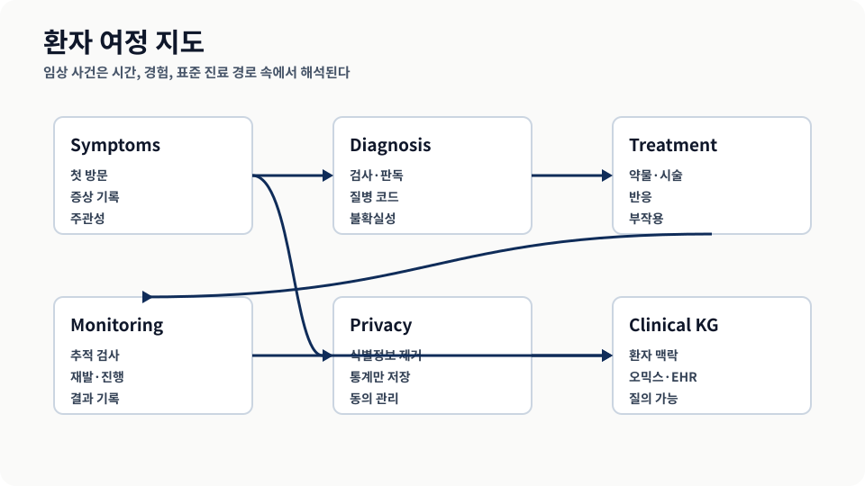
원자료 그림 4.12의 환자 여정 개념을 공개용 시간축으로 재구성했다. 출처 URL은 원자료 캡션에 명시된 David Hughes 제공 자료다.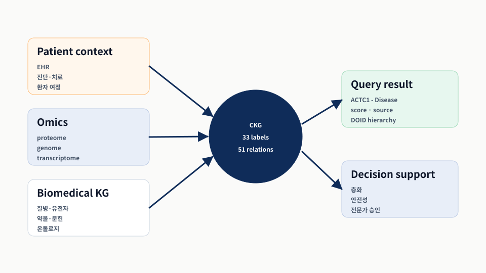
CKG는 임상 의사결정 지원을 위해 환자 맥락과 생명의학 지식을 함께 질의 가능한 구조로 둔다. 출처: 원자료 그림 4.13.Listing 4.21 CKG 데이터베이스 가져오기
Clinical Knowledge Graph 백업을 가져와 임상 질의 예제를 실행할 기반을 만든다.
CREATE DATABASE ckg OPTIONS {
existingData: 'use',
seedUri: 'https://mng.bz/oZQZ'
}Listing 4.22 알려진 단백질–질병 연관성 찾기
관심 단백질이 심근병증 하위 질병들과 이미 강하게 연결되는지 확인한다. DOID 계층 경로가 질병 범위를 넓혀 준다.
WITH ['ACTC1~P68032'] AS proteins,
3 AS minScore,
'DOID:0050700' AS parentDisease
MATCH (protein:Protein)-[r]-(disease:Disease)
WHERE (protein.name + '~' + protein.id) IN proteins
AND toFloat(r.score) > minScore
AND (disease)-[:HAS_PARENT*0..]->(:Disease {id: parentDisease})
RETURN protein.name, disease.name, r.score, type(r), r.source| node1 | node2 | weight | type | source |
|---|---|---|---|---|
| ACTC1~P68032 | intrinsic cardiomyopathy <DOID:0060036> | 5 | ASSOCIATED_WITH | DISEASES |
| ACTC1~P68032 | left ventricular noncompaction <DOID:0060480> | 5 | ASSOCIATED_WITH | DISEASES |
| ACTC1~P68032 | familial hypertrophic cardiomyopathy <DOID:0080326> | 5 | ASSOCIATED_WITH | DISEASES |
| ACTC1~P68032 | hypertrophic cardiomyopathy <DOID:11984> | 5 | ASSOCIATED_WITH | DISEASES |
| ACTC1~P68032 | dilated cardiomyopathy <DOID:12930> | 5 | ASSOCIATED_WITH | DISEASES |
| ACTC1~P68032 | restrictive cardiomyopathy <DOID:397> | 5 | ASSOCIATED_WITH | DISEASES |
4.4.1 LLM 기반 임상 의사결정 지원 분석 — 발견을 진료로 잇다
- ACTC1과 심근병증 관련 질병의 강한 연결은 임상시험 환자 층화와 안전성 모니터링 질문으로 이어진다.
- LLM 프롬프트는 KG 발견, 단백질 목록, 임상 시나리오를 함께 제공해 구체적인 검토 항목을 만들게 한다.
- 최종 결론은 LLM이 아니라 임상의·연구자 검토, 프로토콜 변경 승인, 환자 안전 기준을 거친다.
CKG 질의는 강한 단백질-질병 연관성이라는 계산 결과를 제공한다. LLM은 이 결과를 환자 층화, 포함·제외 기준, companion biomarker, 모니터링 프로토콜 같은 실제 임상 운영 질문으로 번역할 수 있다. 그러나 원자료도 명시하듯 LLM 결과를 그대로 쓰는 것은 권하지 않는다.
Listing 4.23 LLM 임상 분석 프롬프트 예시
프롬프트는 KG 발견을 임상시험 설계 검토 항목으로 바꾼다. 결과를 자동 권고로 노출하지 않고 환자 층화, 안전성, 추가 검사, 포함·제외 기준처럼 사람이 승인할 질문으로 분해한다.
You are a clinical informatics specialist analyzing protein-disease associations from electronic health records integrated with biomedical knowledge graphs. Provide clinical decision support based on these findings:
CLINICAL SCENARIO: Research study targeting proteins in patients with cardiomyopathy-related diseases
KNOWLEDGE GRAPH FINDINGS:
- ACTC1~P68032 shows strong associations (score: 5.0) with:
* Intrinsic cardiomyopathy (DOID:0060036)
* Left ventricular noncompaction (DOID:0060480)
* Familial hypertrophic cardiomyopathy (DOID:0080326)
* Hypertrophic cardiomyopathy (DOID:11984)
* Dilated cardiomyopathy (DOID:12930)
* Restrictive cardiomyopathy (DOID:397)
TARGET PROTEIN LIST:
['A1BG~P04217', 'A2M~P01023', 'ACACB~O00763', 'ACTC1~P68032',
'ADIPOQ~Q15848', 'AGT~P01019', 'AIFM2~Q9BRQ8', 'APOA2~V9GYM3']
CLINICAL REQUEST:
1. Interpret the clinical significance of ACTC1's broad cardiomyopathy associations
2. What does this suggest about patient stratification for clinical trials?
3. Identify potential safety considerations for the research study
4. Recommend additional screening or monitoring protocols
5. Suggest companion biomarkers or genetic testing approaches
6. Propose modifications to inclusion/exclusion criteria based on these findings| 질문 | 적합 신호 | 위험 신호 | 실험 단위 |
|---|---|---|---|
| 식별자를 맞출 수 있는가? | 공통 ID, 온톨로지, 소유자가 있다. | 동명이의어·코드 누락을 검증할 방법이 없다. | 대표 소스 2개를 연결하고 중복률을 측정한다. |
| 그래프 지표가 질문과 맞는가? | 부분 그래프, 경계, 경로 패턴이 의사결정과 연결된다. | 범용 군집 결과를 도메인 사실처럼 해석한다. | 질병 3개에 대해 지표와 전문가 해석을 대조한다. |
| LLM 해석을 통제할 수 있는가? | 입력 결과, 출처, 한계, 승인 상태를 함께 저장한다. | LLM 설명만 남고 원 질의·경로·조건이 사라진다. | LLM 답변에 근거 경로 링크와 보류 옵션을 강제한다. |
요약 — 단순 네트워크에서 다중 소스 통합으로
- 구조화된 데이터 소스라도 엔티티 해소, 스키마 정렬, 품질 검증 없이는 하나의 KG로 안전하게 질의할 수 없다.
- WCC와 Louvain은 전체 그래프의 연결성과 커뮤니티 구조를 보는 도구이며, 질병 경로 같은 도메인 부분 그래프 분석과 목적이 다르다.
- largest CC, density, conductance는 질병 단백질 집합이 내부적으로 얼마나 뭉치고 바깥과 얼마나 연결되는지 정량화한다.
- DWPC는 메타경로 기반 경로 수에 차수 감쇠를 적용해, 아무하고나 연결된 허브가 결과를 지배하는 문제를 줄인다.
- Hetionet, PPI 네트워크, CKG는 데이터 통합·경로 분석·임상 질의의 서로 다른 난이도를 보여 주는 시험대다.
- LLM은 KG 분석 결과를 사람이 검토할 설명과 질문으로 바꿀 수 있지만, 근거 경로와 사람의 승인 절차 없이 결론을 대신할 수 없다.
따라서 이 장의 실무적 결론은 “더 큰 그래프”가 아니라 “더 잘 추적되는 그래프”다. 통합 단계에서는 어떤 출처가 어떤 ID와 관계로 들어왔는지를 보존하고, 분석 단계에서는 지표가 실제 질문과 같은 대상을 보고 있는지 확인하며, LLM 해석 단계에서는 수치와 경로를 잃지 않는 방식으로 사람의 판단을 보조해야 한다.
핵심 용어
| 용어 | 이 장에서의 의미 |
|---|---|
| 다중 오믹스 | 유전체·전사체·단백질체처럼 서로 다른 생물학적 층위를 함께 다루는 분석 접근. |
| PPI | 단백질끼리의 상호작용 네트워크. 질병 경로 부분 그래프의 배경 그래프가 된다. |
| WCC | 연결 여부만으로 끊긴 컴포넌트를 찾는 알고리즘. |
| Louvain | 모듈성을 기준으로 내부 연결이 강한 커뮤니티를 찾는 알고리즘. |
| 전도도 | 부분 그래프가 나머지 그래프와 얼마나 연결되는지 보는 지표. 낮을수록 내부 커뮤니티에 가깝다. |
| DWPC | 차수가 높은 노드를 지나는 경로를 감쇠해 메타경로의 관련성을 계산하는 지표. |
| CKG | 임상·오믹스·문헌 지식을 통합한 Clinical Knowledge Graph. |
참고 자료와 도형 출처
- [1]Alessandro Negro, Knowledge Graphs and LLMs in Action, Chapter 4 해설판. 참가자 자료 링크: Chapter 4 source explainer.
- [2]SNAP Disease Pathways in the Human Interactome, DisGeNET, Disease Ontology, NIH gene_info, Hetionet, CKG는 원자료가 설명한 공개 데이터 소스다.
- [3]모든 SVG는 원자료 캡션의 구조와 관계를 바탕으로 AIML Quant 발표용으로 새로 작도했다. 원본 스캔이나 사설 교재 이미지는 복사하지 않았다.